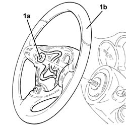
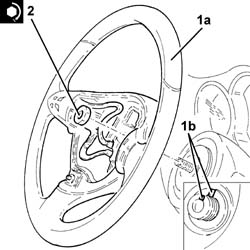

4110A11 STEERING WHEEL - R+R FOR REPLACEMENT OR CHECK FOR VERSIONS WITH AIR BAG
- Path
- Procedures > 41 STEERING UNIT > 4110 STEERING CONTROL AND LINKAGE > 4110A STEERING CONTROL > 4110A11 STEERING WHEEL - R+R FOR REPLACEMENT OR CHECK FOR VERSIONS WITH AIR BAG
- Kind
- repair procedure (removal / refitting; the operation number is the code)
- Applies to
- all engines; all production periods
- Interactive page
- https://sloeber94.github.io/elrnDB-aGt/en/#/125001398
Applies to: all engines; all production periods
 Removing
Removing
 Refitting
RefittingPlace the steering wheel in the centred position with the wheels straight.
Proceed with removal
Op. 5580C18 AIR BAG MODULE - R+R
Disconnect the electrical connection for the horn.
1. Undo the nut (1a) and remove the steering wheel (1b).

Applies to: all engines; all production periods
Refitting
Removing1. Refit steering wheel (1a) in its seat so that references (1b) stamped on the steering wheel and steering column are aligned.
2. Tighten the fixing nuts to the recommended torque.
 | Fastening | Component | Ø | Value (daNm) |
|---|---|---|---|---|
2 | Nut | STEERING WHEEL | M16 | 45 55 |
Connect the electrical connection for the horn.

Applies to: all engines; all production periods
Proceed with refitting
Topics linked from this page (1)
Topics that link to this page (16)
- N70 CONTROLS ON THE STEERING WHEEL NOT WORKING
- 4110A30 SUPPORT WITH STEERING CONTROL SHAFTS - R+R - INCLUDES R+R STEERING WHEEL
- 5040A80 EXPANSION/CONNECTION PIPE - R R
- 5040B30 EXPANSION VALVE (TUBE ORIFICE) - R+R
- 5040C50 AIR CONDITIONER HEATER RADIATOR - R+R
- 5040C64 A/C MANUAL CONTROL SWITCH (ONE) - R+R
- 5040D76 AIR CONTITIONER DISTRIBUTION FLAP CONTROL MOTOR - R R
- 5040D84 AIR CONDITIONER LEFT HAND AIR MIXER FLAP CONTROL MOTOR - R R
- 5040D86 AIR CONDITIONER RIGHT HAND AIR MIXER FLAP CONTROL MOTOR - R R
- 5040D90 AIR CONDITIONER SYSTEM WIRING BUNDLE - R R
- 5505C34 INTERGRATED INSTRUMENT UNDER FACIA FRONT AIR BAG WIRING - R R
- 5550A12 COMPLETE STALK UNIT - R+R FOR VERSIONS WITH AIR BAG
- 5560B11 ANALOGUE CONTROL PANEL - R+R OR REPLACE
- 5580A10 CRUISE CONTROL LEVER ASSEMBLY - R+R
- 7040A10 L/H OR R/H FRONT SEAT (ONE) - R+R
- 7040A97 FACIA TRIM SUPPORT BEAM - R R